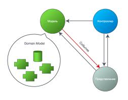

Беседы о Qt. Парадигма Model-View
Мы остановились на необходимости ознакомиться с парадигмой «Модель Вид» (Model View).

Можно рассматривать модель как средство предоставления данных некоторым образом, а вид — как средство их отображения. Например, есть стандартная модель для списка строк — QStringListModel. А также есть модель, отражающая содержимое файловой системы, -QDirModel. QStandardItemModel — это многофункциональная модель. С последним классом мы и будем разбираться. Вот простейший пример использования этой модели — строим на ее основе список строк:
|
QStandardltemModel *model = new QStandardItemModel (this);
model->appendRow (new QStandardltem ("one")); model->appendRow (new QStandardItem ("two")); model->appendRow (new QStandardltem ("three")); model->appendRow (new QStandardItem ("four"));
QTreeView *tv = new QTreeView (this); tv->setModel (model); |
Итак, вначале создается экземпляр модели, затем в нее добавляются четыре элемента со строковыми значениями one, two, three, four. После этого создается виджет отображения модели (экземпляр QTreeView) и модель назначается ему. Обратите внимание: вместо QTreeView можно использовать и другой виджет представления — QListView:
QListView *lv = new QListView (this);
lv->setModel (model);
Разница — в том, что QListView не умеет отображать сложные списки (например, деревья или состоящие из нескольких колонок). Зато в QListView есть два режима отображения: обычным списком строк и в виде иконок. Но вернемся к модели и посмотрим на вызов функции:
|
model->appendRow (new QStandardltem ("one")); |
Функция appendRow() добавляет в модель новый ряд с элементом, переданным в качестве параметра. Можно передать несколько элементов — список, — таким образом создается ряд с несколькими колонками.
Пример:
|
QList<QStandardItem *> items;
items.append (new QStandardltem ("column 0"));
items.append (new QStandardltem ("column 1"));
items.append (new QStandardltem ("column 2"));
model->appendRow (items); |
Замечу, что это следует отображать в QTreeView. Пример у нас — весьма упрощенный. Что будет, если требуется особо оформить каждый элемент, например первую колонку выводить жирным шрифтом?
QList items;
QStandardltem *item = new QStandardItem («column 0″);
QFont f = item->font(); f.setBold (true); item->setFont(f); items. append (item);
items.append (new QStandardItem («column 1″)); items.append (new QStandardItem («column 2″));
model->appendRow (items);
Как видно, с экземпляром QStandardltem можно проделывать разные интересные вещи: менять его шрифт, цвет, устанавливать флаги доступа:
item->setFlags (Qt:: ItemIsSelectable | Qt:: ItemIsEnabled);
В этом примере мы разрешаем выделение элемента. Можем и запретить, не указывая флаг Qt::ItemIsSelectable. QStandardltem оснащен теми же методами, что и модель — в него тоже добавляются ряды и колонки. Давайте создадим вложенный элемент для первой колонки:
|
QList<QStandardItem *> items;
QStandardItem *item = new QStandardItem ("item 0"); item->appendRow (new QStandardItem ("subitem 0"));
items. append (item);
items.append (new QStandardItem ("item 1")); items.append (new QStandardItem ("item 2"));
model->appendRow (items); |
Итак, вызовом:
item->appendRow (new QStandardItem («subitem 0″));
мы добавляем новый элемент subitem 0 как ряд к элементу item. В свою очередь к новосозданному элементу тоже можно добавлять элементы — так получается древовидная иерархия. Вот еще одна, более классическая иерархия — два корневых элемента, у каждого из которых есть внутренние элементы:
QStandardItem *item = new QStandardItem («animals»); item->appendRow (new QStandardItem («dog»)); item->appendRow (new QStandardItem («cat»)); item->appendRow (new QStandardItem («cow»)); model->appendRow (item);
item = new QStandardItem («games»); item->appendRow (new QStandardItem («Fallout»)); item->appendRow (new QStandardItem («Doom»)); item->appendRow (new QStandardItem («Quake»)); model->appendRow (item);
Экземпляры QStandardItem весьма универсальны, и в большинстве случаев нет нужды создавать свои классы для представления элементов. Объект QStandardItem может содержать текст, иконку или checkbox. Как уже сообщалось, у такого объекта можно менять значения свойств вроде цвета, шрифта.
С созданием и наполнением модели мы немного разобрались. Теперь посмотрим, как получать данные — например, выделенный элемент и тому подобное.
Во-первых, научимся получать из модели нужные нам элементы. Для «плоского» списка строк сделать это довольно просто: достаточно обратиться к функции QStandardItemModel::findItems(), которая возвращает список элементов, текст коих соответствует заданному вами критерию.
В примере ниже мы получаем такой список (критерий — текст column 1), проходим по нему в цикле и выводим текст найденных элементов:
QList list = model->findItems («column 1″, J Qt::MatchExactly | Qt::MatchRecursive);
foreach (QStandardItem *item, list) qDebug() << item->text();
Обратите внимание на флаг Qt::MatchRecursive. Он указывает, что поиск будет проводиться по всей иерархии, а не только в элементах корневого уровня.
Теперь представим, что мы хотим сделать текущим элемент с заданной надписью:
|
QList<QStandardItem *> list = model->findItems ("dog", J Qt::MatchExactly | Qt::MatchRecursive);
QModelIndex index;
if (list.size() > 0)
index = model->indexFromItem (list[0]);
tv->selectionModel()->setCurrentIndex (index, J QItemSelectionModel::Select);
tv->scrollTo (index); |
Думаю, всё ясно: получаем список элементов, на которых написано dog (а такой элемент у нас один). Далее нам для элемента понадобился соответствующий ему объект QModelIndex. QModelIndex — это служебный класс для работы с положением элемента в иерархии. Поскольку у нас пример простой и мы заранее знаем, что искомый элемент у нас только один — значит, он находится в первом элементе списка, то есть доступен в list[0]. Вызываем с ним model->indexFromItem(), получаем модельный индекс. Что с ним делать дальше? У QTreeView есть особая модель для операций с выделением элементов. В QStandardItemModel нет таких функций, а вот у QItemSelectionModel они есть. И для обращения к указателю на экземпляр этой модели мы воспользовались функцией selectionModel():
tv->selectionModel()->setCurrentIndex (index, J QItemSelectionModel::Select);
Таким образом, мы вызвали функцию QItemSelectionModel:: setCurrentIndex(), чтобы сделать текущим элемент по модельному индексу index. И последний росчерк пера — вызов QTreeView:: scrollTo() для прокрутки видимой области к заданному индексу:
tv->scrollTo (index);
Класс QItemSelectionModel пригодится также, чтобы узнать индекс текущего элемента — он возвращается функцией currentIndex(). Получим текст выделенного элемента:
QModelIndex index = tv->selectionModel()->currentIndex();
QString item_ string = index.data().toString();
Для обращения к множеству выделенных элементов существуют функции selectedColumns (колонки по указанному ряду), selectedRows (индексы по колонке) и selectedIndexes (без критерия). Например, если модель представляет список файлов, то каждый ряд состоит из столбцов «имя файла», «размер», «дата», но вам нужно получить только выделенные имена (без размера и даты), то пишем примерно такой код:
QModelIndexList il = tree_view->selectionModel()-> J QItemSelectionModel::selectedRows (0);
foreach (QModelIndex index, il)
{
qDebug() << index.data() .toString();
}
Функция selectedRows() вернула нам в виде QModelIndexList список выделенных индексов из нулевой колонки - именно в ней имена файлов. Затем в цикле проходим по списку и выводим на консоль названия элементов. Не буду описывать сигналы, которые посылает QTreeView при выборе элемента, и тому подобное - для этого есть документация. Коснусь тонкостей работы с моделью и представлением.
Перед любыми действиями с моделью, если она уже подключена к виджету отображения, модель лучше отключить от этого виджета. Вот так:
tree_view->setModel (0);
А обновив модель, потом снова подключить:
tree_view->setModel (model);
Зачем? Каждое изменение модели приводит к отрисовке виджета отображения. Представьте теперь, что вы в цикле заполняете модель тысячью элементов. Виджет обновится тысячу раз. А при отключенной модели вы спокойно обновляете модель, затем подключаете ее к виджету, и тогда-то он рисует разом все элементы. После такого подключения обязательно снова переназначьте все сигналы, связанные с моделью selectionModel() виджета просмотра. Например:
connect (tree_view->selectionModel(), SIGNAL(currentChanged J (const QModellndex &, const QModellndex &)), this, J SLOT(my_currentChanged ( const QModellndex &, J const QModellndex &)));
Для управления шириной колонок используйте объект-заголовок, возвращаемый виджетом отображения через функцию header(). Например:
tree_view->header()->setResizeMode J (QHeaderView: :ResizeToContents);
Функция header() у QTreeView возвращает указатель на используемый в виджете заголовок. Он является экземпляром класса QHeaderView. Изучите его подробно, потому что именно в нем заключены многие функции отображения не просто заголовка, но и содержимого модели вообще. Например, если вызвать функцию setStretchLastSection с параметром true, то последняя колонка в списке будет растянута до конца рабочей области виджета.